【アイドルである私の一日】画面さくら
今日はひさびさの休日です！
だから、ショッピングに行ってキュートなお洋服を買いました。
お家に帰って着てみたら、にあっていてうれしかったです。
これからもいろいろなお洋服を買って、
おしゃれさんになりたいなぁと思います。
次に書くのは・・・
チョコちゃんはいつも元気でかっこいいです。
ダンスがすごくうまいんですよ！
つぎはチョコちゃんが大天ブログを書きます。
お楽しみに！
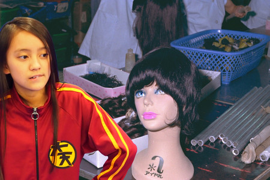
投稿者:画面さくら | 投稿時間:18時00分 | カテゴリ：We are 大天才テレビジョン | 固定リンク


 " title="ソーシャルブックマークについて">
" title="ソーシャルブックマークについて">
※NHKサイトを離れます。
【データ放送でのアバターの登録方法】電波ミルクが挑戦！！
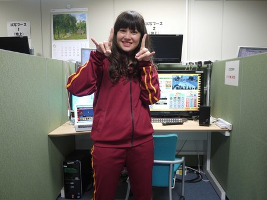
「てれびちゃん１号 電波ミルクでーす。今日は天てれのデータ放送をより楽しもうってことで『アバターの登録』に挑戦しまーす」
① 番組会員ページにログイン
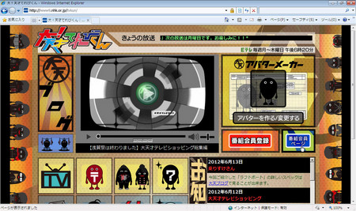
「まず、番組ＨＰから会員ページにログインします」
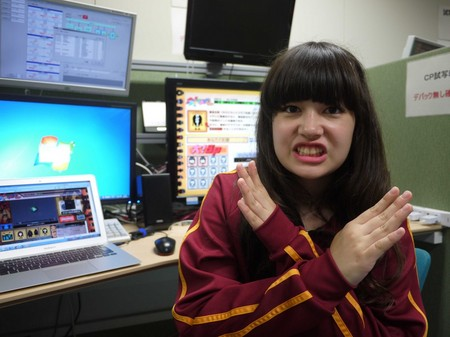
「会員じゃない人はダメダメ。会員になってからやってね」
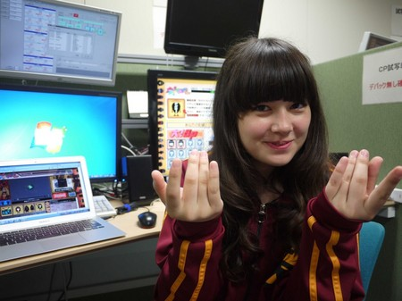
「無料だからさー入って入って」
② アバターを作る
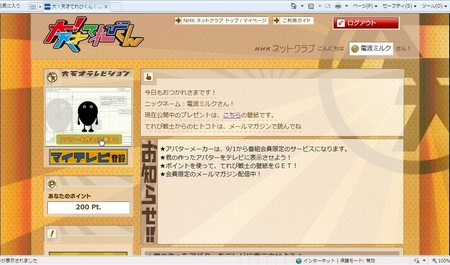
「まず、会員ページにログイン」
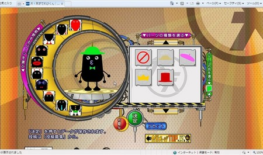
「ログインしたら、会員ページのアバターメーカーでアバターを作りまーす」
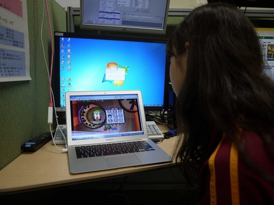
「むむむ・・・結構悩むなぁ」
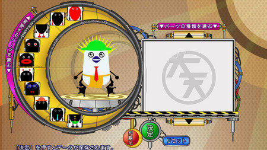
「こんなかんじでいいかな～ よし、決定！」
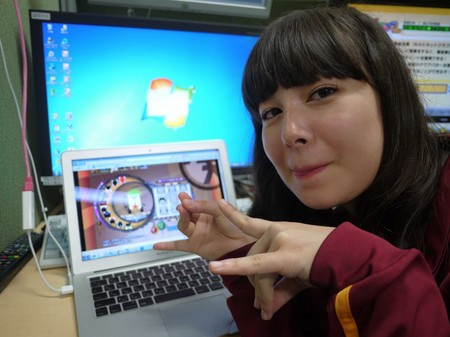
「できたー！」
③ パソコンでマイテレビ登録
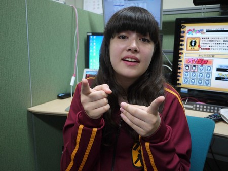
「次に、『マイテレビ登録』」というのをします」
※マイテレビ登録：自宅のテレビなどを登録。一人５台まで可
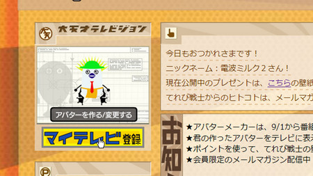
「これは、普段見ているお家のテレビなんかを登録するってことだよ。
会員ページＴＯＰで『マイテレビ登録』ボタンをポチッとなー」
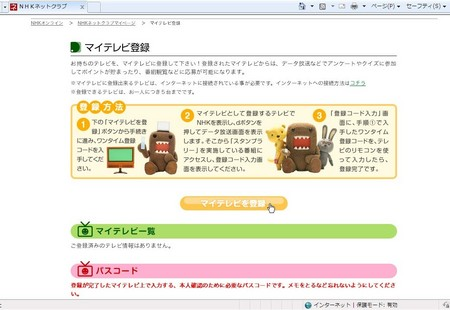
「およよ、また『マイテレビ登録』ボタンがぁ。ポチッとな」
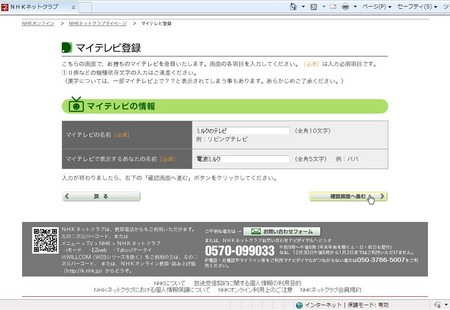
「そして、『マイテレビの名前』と『マイテレビで表示するあなたの名前』を入力。
『ミルクのテレビ』・・・『電波ミルク』・・・と」
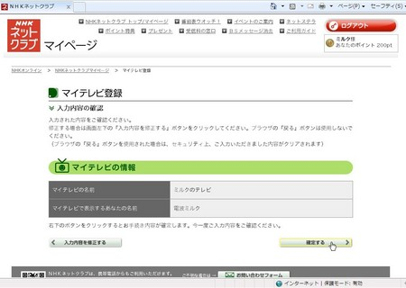
「で、次へ行って『確定』」
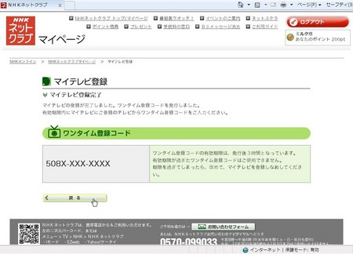
「マイテレビ登録完了！」
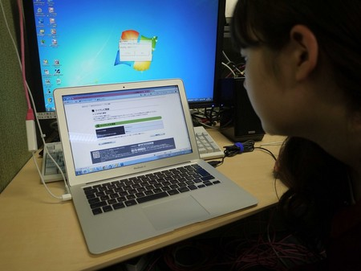
「『ワンタイム登録コード』というのをメモメモ」
④ データ放送で登録コード入力
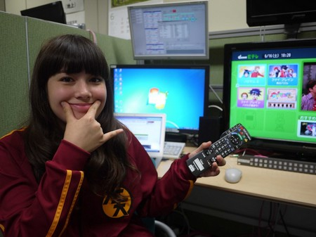
「次はテレビだよー！ついてきてるかーい。
テレビはインターネットにつないだ状態だからね」
（ケーブルテレビでの視聴でも可） ※つなぎ方詳細：ネットにつなごうHP

「天てれのデータ放送は、Ｅテレでリモコンのdボタンを押して、天てれのアイコンを選んで決定」
Eテレ⇒dボタン⇒大！天才てれびくん
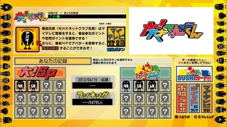
「まだ、アバターがないのだ～（涙）」
「ここで『マイテレビ登録』を選んで押す（決定）」
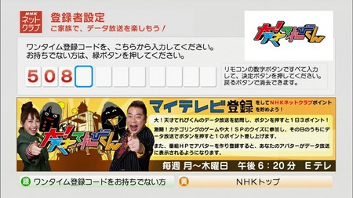
「すると、さっきの『ワンタイム登録コード』を入力する画面がでるので、リモコンで数字を入力」
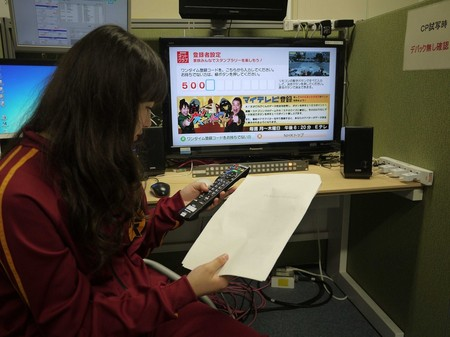
「ボスとアッキーが出迎えてくれるよー。これで、ＯＫ！」
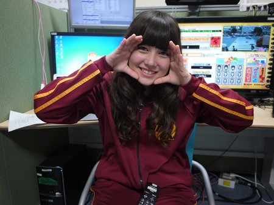
「おつかれさ～ん」
⑤ アバターをテレビに送る
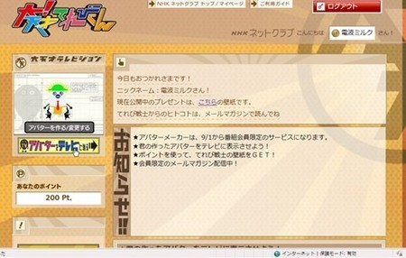
「もう一度、パソコンに戻って、ログイン。 今度は、『アバターをテレビに送る』ボタンをクリック」
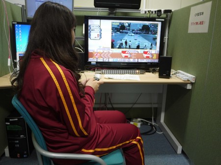
「これで、表示まで5～10分は待ってくださいねー」
「データ放送でSUSHIカートでもやって待っててね～」
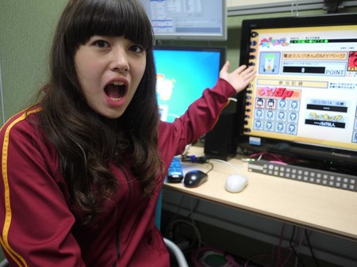
「10分後、天てれデータ放送のＴＯＰに戻って見ると！」
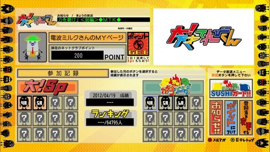
「さっき作ったアバターが表示されてるし、私、ミルクの名前も入ったよー！」
「ＮＨＫネットクラブポイントも表示されていますね～ ここで、耳寄り情報！」
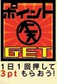
「毎日1回、このポイントの横のボタンを押すと、3ポイント！」
「カテゴリングなどのゲームやクイズに参加して、その日のうちにボタンを押すと、１０ポイントもらえちゃうのだー」
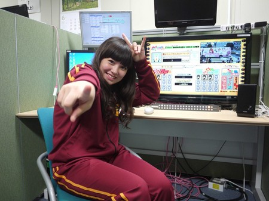
「ということで、ミルクにも登録ができました！」
「やったぜー！みんなも頑張ってやってね」
投稿者:大天才テレビジョン社員１号 | 投稿時間:00時00分 | カテゴリ：お知らせ！ | 固定リンク
" title="ソーシャルブックマークについて">
※NHKサイトを離れます。